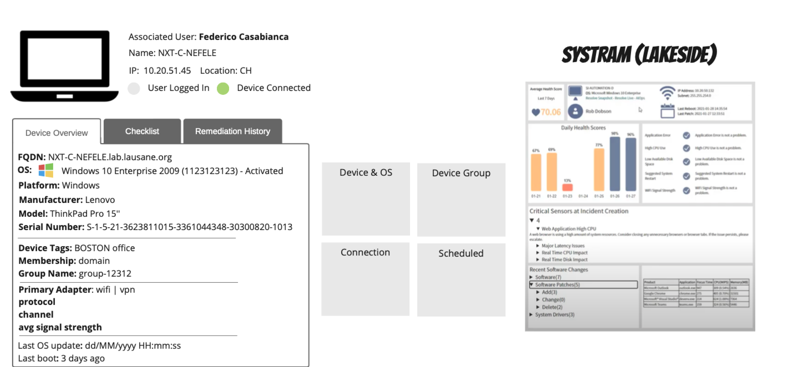
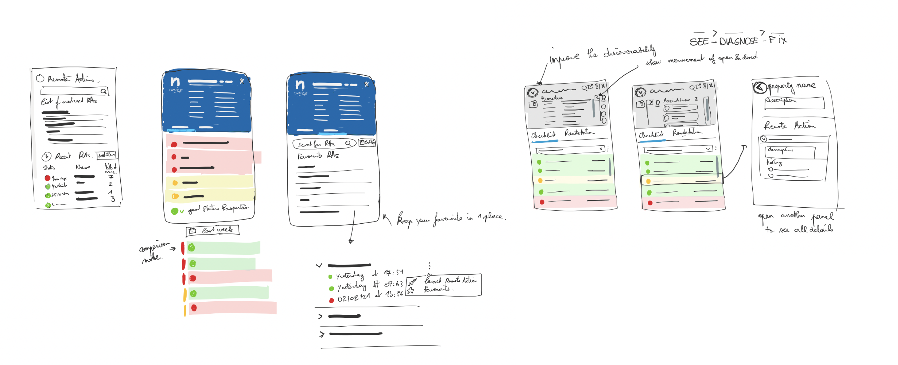
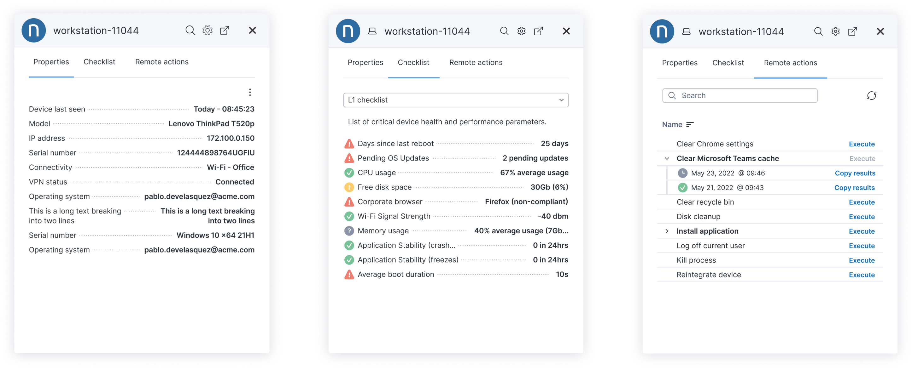

- 5.2KMonthly active users
- $801KARR at launch
- >11%MoM growth
- 11.5MExtension installs
Challenge
L1 support agents had to jump between multiple tools to diagnose device issues during a live ticket — losing time, context, and confidence. The brief was to bring real-time diagnostics directly into their existing helpdesk workflow, without disrupting how they work.
Process
I ran discovery sessions with L1 agents to map their daily workflow and identify where friction cost the most time. Multiple rounds of low-fi prototypes were tested in the field, progressively refined until the extension felt invisible — a natural extension of the ticket, not a new tool to learn.
Outcome
The extension reached 5.2K monthly active users and 11.5M Chrome installs within 12 months of launch, contributing to ~$801K ARR with >11% month-on-month and >2,252% year-on-year usage growth. Resolution times dropped and escalations fell across all instrumented teams.
How it started
The first version of Amplify came from the Product team as a rough functional prototype — built to prove technical feasibility, not usability. Agents had to parse raw data across several disconnected panels with no clear hierarchy or action path. It worked, but only for engineers already fluent in the underlying platform.

My process
I started with job shadowing and contextual interviews to understand the exact moment agents needed device data. From there I sketched decision trees, tested card-sort exercises to establish information hierarchy, and produced multiple rounds of wireframes. Each iteration was validated with agents in their actual ticketing environment before moving to higher fidelity.

The shipped product
The final design collapsed diagnostics into a single, scannable panel: status at a glance, guided troubleshooting steps, and one-click remediation — all without leaving the ticket. The design system was built component-first to ensure consistency across future Amplify features.
